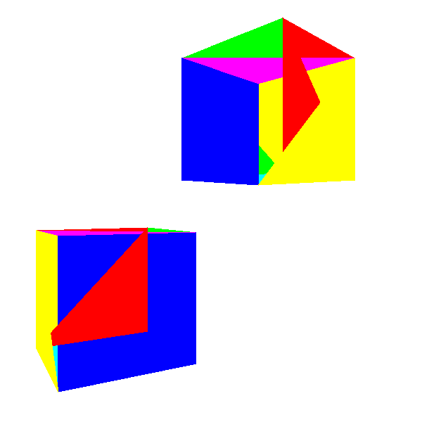
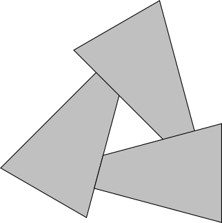
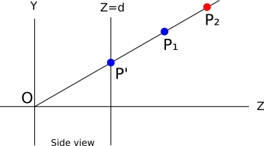
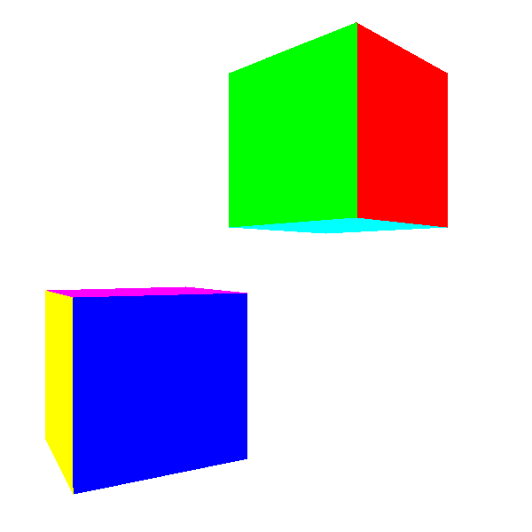
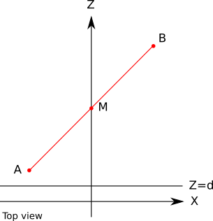
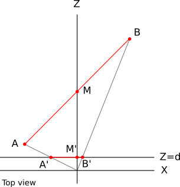
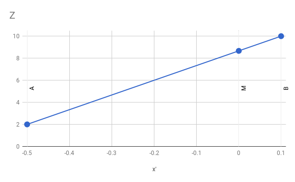
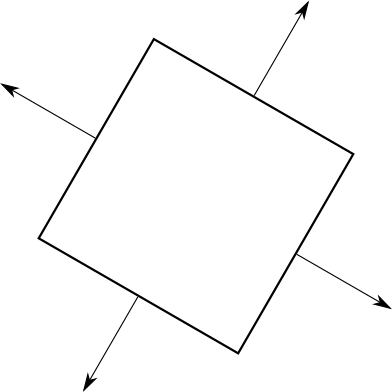
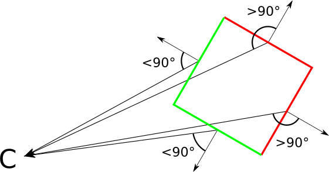
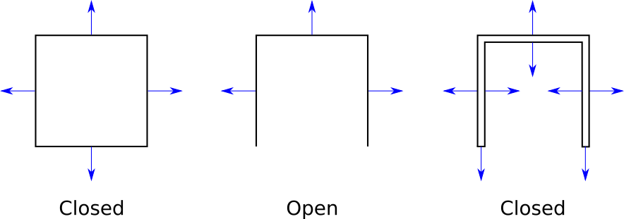

Hidden Surface Removal
We can now render any scene from any point of view, but the resulting image is visually simple: we’re rendering objects in wireframe, giving the impression that we’re looking at the blueprint of a set of objects, not at the objects themselves.
The remaining chapters of this book focus on improving the visual quality of the rendered scene. By the end of this chapter, we’ll be able to render objects that look solid (as opposed to wireframe). We already developed an algorithm to draw filled triangles, but as we will see, using that algorithm correctly in a 3D scene is not as simple as it might seem!
Rendering Solid Objects
The first idea that comes to mind when we want to make solid objects look solid is to use the function DrawFilledTriangle that we developed in Chapter 7 (Filled Triangles) to draw each triangle of the objects using a random color (Figure 12-1).

The shapes in Figure 12-1 don’t quite look like cubes, do they? If you look closely, you’ll see what the problem is: parts of the back faces of the cube are drawn on top of the front faces! This is because we’re blindly drawing 2D triangles on the canvas in a “random order” or, more precisely, in the order they happen to be defined in the Triangles list of the model, without taking into account the spatial relationships between them.
You might be tempted to go back to the model definition and change the order of the triangles to fix this problem. However, if our scene includes another instance of the cube that is rotated \(180^\circ\), we’d go back to the original problem. In short, there’s no single “correct” triangle order that will work for every instance and camera orientation. What should we do?
Painter’s Algorithm
A first solution to this problem is known as the painter’s algorithm. Real-life painters draw backgrounds first, and then cover parts of them with foreground objects. We could achieve the same effect by drawing all the triangles in the scene back to front. To do so, we’d apply the model and camera transforms and sort the triangles according to their distance to the camera.
This works around the “no single correct order” problem explained above, because now we’re looking for a correct ordering for a specific relative position of the objects and the camera.
Although this would indeed draw the triangles in the correct order, it has some drawbacks that make it impractical.
First, it doesn’t scale well. The most efficient sorting algorithm known to humans is \(O(n \cdot \log(n))\), which means as we increase the size of the input, the runtime increases more than just proportionally (for example, if sorting 10 triangles requires approximately 33 operations, sorting 100 triangles requires 664 operations, not 330; and sorting 1000 triangles requires 9965 operations, not 3300!) In other words, this works for small scenes, but it quickly becomes a performance bottleneck as the complexity of the scene increases.
Second, it requires us to know the whole list of triangles at once. This requires a lot of memory and stops us from using a stream-like approach to rendering. We want our renderer to be like a pipeline, where model triangles enter on one end and pixels come out the other end, but this algorithm doesn’t start drawing pixels until every triangle has been transformed and sorted.
Third, even if we’d be willing to live with these limitations, there are cases where a correct ordering of triangles just doesn’t exist at all. Consider the case in Figure 12-2. We will never be able to sort these triangles in a way that produces the correct results.

Depth Buffering
We can’t solve the ordering problem at the triangle level, so let’s try to solve it at the pixel level.
For each pixel on the canvas, we want to paint it with the “correct” color, where the “correct” color is the color of the object that is closest to the camera. In Figure 12-3, that’s \(P_1\).

At any time during rendering, each pixel on the canvas represents one point in the scene (before we draw anything, it represents a point infinitely far away). Suppose that for each pixel on the canvas, we kept the \(Z\) coordinate of the point it currently represents. When we need to decide whether to paint a pixel with the color of an object, we will do it only if the \(Z\) coordinate of the point we’re about to paint is smaller than the \(Z\) coordinate of the point that is already there. This guarantees that a pixel representing a point in the scene is never drawn over by a pixel representing a point that is farther away from the camera.
Let’s go back to Figure 12-3. Suppose that because of the order of the triangles in a model, we want to paint \(P_2\) first and \(P_1\) second. When we paint \(P_2\), the pixel is painted red, and its associated \(Z\) value becomes \(Z_{P_2}\). Then we want to paint \(P_1\), and since \(Z_{P_2} > Z_{P_1}\), we paint the pixel blue and we get the correct result.
In this particular case, we’d have gotten the correct result regardless of the values of \(Z\), because the points happened to come in a convenient order. But what if we wanted to paint \(P_1\) first and \(P_2\) second? We first paint the pixel blue and store \(Z_{P_1}\); but when we want to paint \(P_2\), we see that \(Z_{P_2} > Z_{P_1}\), so we don’t paint it—because if we did, \(P_1\) would be covered by \(P_2\), which is farther away! We get a blue pixel again, which is the correct result.
In terms of implementation, we need a buffer to store the \(Z\) coordinate of every pixel on the canvas; we call this the depth buffer. It has the same dimensions as the canvas, but its elements are real numbers representing depth values, not pixels.
But where do the \(Z\) values come from? These should be the \(Z\) values of the points after they’re transformed but before they’re perspective-projected. However, this only gives us \(Z\) values for vertices; we need a \(Z\) value for every pixel of every triangle.
Here is yet another application of the attribute-mapping algorithm we developed in Chapter 8 (Shaded Triangles). Why not use \(Z\) as the attribute and interpolate it across the face of the triangle, just like we did before with color-intensity values? By now you know how to do it: take the values of z0, z1, and z2; compute z01, z02, and z012; combine them to get z_left and z_right; then, for each horizontal segment, compute z_segment. Finally, instead of blindly calling PutPixel(x, y, color), we do this:
z = z_segment[x - xl]
if (z < depth_buffer[x][y]) {
canvas.PutPixel(x, y, color)
depth_buffer[x][y] = z
}
For this to work correctly, every entry in depth_buffer should be initialized to \(+\infty\) (or just “a very big value”). This guarantees that the first time we want to draw a pixel, the condition will be true, because any point in the scene is closer to the camera than a point infinitely far away.
The results we get now are much better—check out Figure 12-4.

Using 1/Z instead of Z
The results look much better, but what we’re doing is subtly wrong. The values of \(Z\) for the vertices are correct (they come from data, after all), but in most cases the linearly interpolated values of \(Z\) for the rest of the pixels are incorrect. This might not even result in a visible difference at this point, but it would become an issue later.
To see how the values are wrong, consider the simple case of a line segment from \(A (-1, 0, 2)\) to \(B (1, 0, 10)\), with its midpoint \(M\) at \((0, 0, 6)\). Specifically, because \(M\) is the midpoint of \(AB\), we know that \(M_z = (A_z + B_z) / 2 = 6\). Figure 12-5 shows this line segment.

Let’s compute the projection of these points with \(d = 1\). Applying the perspective projection equations, we get \(A\, '_x = A_x / A_z = -1 / 2 = -0.5\). Similarly, \(B\, '_x = 0.1\) and \(M\, '_x = 0\). Figure 12-6 shows the projected points.

\(A\, 'B\, '\) is a horizontal segment on the viewport. We know the values of \(A_z\) and \(B_z\). Let’s see what happens if we try to compute the value of \(M_z\) using linear interpolation. The implied linear function looks like Figure 12-7.

The slope of the function is constant, so we can write
\[{ M_z - A_z \over M\, '_x - A\, '_x } = { B_z - A_z \over B\, '_x - A\, '_x }\]
We can manipulate that expression to solve for \(M_z\):
\[M_z = A_z + (M\, '_x - A\, '_x) ({B_z - A_z \over B\, '_x - A\, '_x})\]
If we plug in the values we know and do some arithmetic, we get
\[M_z = 2 + (0 - (-0.5))({10 - 2 \over 0.1 - (-0.5)}) = 2 + (0.5)({8 \over 0.6}) = 8.666\]
This says that the value of \(M_z\) is \(8.666\), but we know for a fact it’s actually \(6\)!
Where did we go wrong? We’re using linear interpolation, which we know works well, and we’re feeding it the correct values, which come from data, so why is the result wrong?
Our mistake is hidden in the implicit assumption we make when we use linear interpolation: that the function we are interpolating is linear to begin with! In this case, it turns out it isn’t.
If \(Z = f(x', y')\) was a linear function of \(x'\) and \(y'\), we could write it as \(Z = Ax' + By' + C\) for some values of \(A\), \(B\), and \(C\). This kind of function has the property that the difference of its value between two points depends on the difference between the points but not on the points themselves:
\[f(x' + \Delta x, y' + \Delta y) - f(x', y') = [A (x' + \Delta x) + B (y' + \Delta y) + C] - [A \cdot x' + B \cdot y' + C]\] \[= A (x' + \Delta x - x') + B (y' + \Delta y - y') + C - C\] \[= A \Delta x + B \Delta y\]
That is, for a given difference in screen coordinates, the difference in \(Z\) would always be the same.
More formally, the equation of the plane that contains the line segment we’re studying is
\[Ax + By + Cz + D = 0\]
On the other hand we have the perspective projection equations:
\[x' = {{x \cdot d} \over z}\]
\[y' = {{y \cdot d} \over z}\]
We can get \(x\) and \(y\) back from these:
\[x = {{z \cdot x'} \over d}\]
\[y = {{z \cdot y'} \over d}\]
If we replace \(x\) and \(y\) in the plane equation with these expressions, we get
\[{Ax'z + By'z \over d} + Cz + D = 0\]
Multiplying by \(d\) and then solving for \(z\),
\[Ax'z + By'z + dCz + dD = 0\]
\[(Ax' + By' + dC)z + dD = 0\]
\[z = {-dD \over Ax' + By' + dC}\]
This is clearly not a linear function of \(x'\) and \(y'\), and this is why linearly interpolating values of \(z\) gave us an incorrect result.
However, if we compute \(1/z\) instead of \(z\), we get
\[1/z = {Ax' + By' + dC \over -dD}\]
This clearly is a linear function of \(x'\) and \(y'\). This means we could linearly interpolate values of \(1/z\) and get the correct results.
In order to verify that this works, let’s calculate the interpolated value for \(M_z\), but this time using the linear interpolation of \(1/z\):
\[{ M_{1 \over z} - A_{1 \over z} \over M'_x - A'_x } = { B_{1 \over z} - A_{1 \over z} \over B'_x - A'_x }\]
\[M_{1 \over z} = A_{1 \over z} + (M'_x - A'_x) ({B_{1 \over z} - A_{1 \over z} \over B'_x - A'_x})\]
\[M_{1 \over z} = {1 \over 2} + (0 - (-0.5)) ({{1 \over 10} - {1 \over 2} \over 0.1 - (-0.5)}) = 0.166666\]
And therefore
\[M_z = {1 \over M_{1 \over z}} = {1 \over 0.166666} = 6\]
This value is correct, in the sense that it matches our original calculation of \(M_z\) based on the geometry of the line segment.
All of this means we need to use values of \(1/z\) instead of values of \(z\) for depth buffering. The only practical differences in the pseudocode are that every entry in the buffer should be initialized to \(0\) (which is conceptually \(1 / +\infty\)), and that the comparison should be inverted (we keep the bigger value of \(1/z\), which corresponds to a smaller value of \(z\)).
Back Face Culling
Depth buffering produces the desired results. But can we make things even faster?
Going back to the cube, even if each pixel ends up having the right color, many of them are painted over several times. For example, if a back face of the cube is rendered before a front face, many pixels will be painted twice. This can be costly. So far we’ve been computing \(1/z\) for every pixel, but soon we’ll add more attributes, such as illumination. As the number of per-pixel operations we need to perform increases, computing pixels that will never be visible becomes more and more wasteful.
Can we discard pixels earlier, before we go into all of this computation? It turns out we can discard entire triangles before we even start rendering!
So far we’ve been talking informally about front faces and back faces. Imagine every triangle has two distinct sides; it’s impossible to see both sides of a triangle at the same time. In order to distinguish between the two sides, we’ll stick an imaginary arrow on each triangle, perpendicular to its surface. Then we’ll take the cube and make sure every arrow is pointing out. Figure 12-8 shows this idea.

These arrows let us classify each triangle as “front” or “back,” depending on whether they point toward the camera or away from the camera. More formally, if the view vector and this arrow (which is actually a normal vector of the triangle) form an angle of less than \(90^\circ\), the triangle is front-facing; otherwise, it’s back-facing (Figure 12-9).

At this point, we need to impose a restriction on our 3D models: that they are closed. The exact definition of closed is pretty involved, but fortunately an intuitive understanding is enough. The cube we’ve been working with is closed; we can only see its exterior. If we removed one of its faces, it wouldn’t be closed because we could see inside it. This doesn’t mean we can’t have objects with holes or concavities; we would just model these with thin “walls.” See Figure 12-10 for some examples.

Why impose this restriction? Closed objects have the interesting property that the set of front faces completely covers the set of back faces, no matter the orientation of the model or the camera. This means we don’t need to draw the back faces at all, saving valuable computation time.
Since we can discard (cull) all the back faces, this algorithm is called back face culling. Its pseudocode is remarkably simple for an algorithm that can cut our rendering time by half!
CullBackFaces(object, camera) {
for T in object.triangles {
if T is back-facing {
remove T from object.triangles
}
}
}Let’s take a more detailed look at how to determine whether a triangle is front-facing or back-facing.
Classifying Triangles
Suppose we have the normal vector \(\vec{N}\) of a triangle and the vector \(\vec{V}\) from a vertex of the triangle to the camera. Now suppose \(\vec{N}\) points to the outside of the object. In order to classify the triangle as front-facing or back-facing, we compute the angle between \(\vec{N}\) and \(\vec{V}\) and check whether they’re within \(90^\circ\) of each other.
We can again use the properties of the dot product to make this simpler. Remember that if \(\alpha\) is the angle between \(\vec{N}\) and \(\vec{V}\), then
\[{{\langle \vec{N}, \vec{V} \rangle} \over {|\vec{N}||\vec{V}|}} = \cos(\alpha)\]
Because \(\cos(\alpha)\) is non-negative for \(|\alpha| \le 90^\circ\), we only need to know the sign of this expression to classify a triangle as front-facing or back-facing. Note that \(|\vec{N}|\) and \(|\vec{V}|\) are always positive, so they don’t affect the sign of the expression. Therefore
\[\mathrm{sign}(\langle \vec{N}, \vec{V} \rangle) = \mathrm{sign}(\cos(\alpha))\]
The classification criterion is simply this:
| \(\langle\, \vec{\mathsf{N}}, \vec{\mathsf{V}}\, \rangle \le\) 0 | Back-facing |
| \(\langle\, \vec{\mathsf{N}}, \vec{\mathsf{V}}\, \rangle >\) 0 | Front-facing |
The edge case \(\langle \vec{N}, \vec{V} \rangle = 0\) corresponds to the case where we’re looking at the edge of a triangle head on—that is, when the camera and the triangle are coplanar. We can classify this triangle either way without affecting the result much, so we choose to classify it as back-facing to avoid dealing with degenerate triangles.
Where do we get the normal vector from? It turns out there’s a vector operation, the cross product \(\vec{A} \times \vec{B}\), that takes two vectors \(\vec{A}\) and \(\vec{B}\) and produces a vector perpendicular to both (for a definition of this operation, see Appendix A (Linear Algebra)). In other words, the cross product of two vectors on the surface of a triangle is a normal vector of that triangle. We can easily get two vectors on the triangle by subtracting its vertices from each other. So computing the direction of the normal vector of the triangle \(ABC\) is straightforward:
\[\vec{V_1} = B - A\] \[\vec{V_2} = C - A\] \[\vec{N} = \vec{V_1} \times \vec{V_2}\]
Note that “the direction of the normal vector” is not the same as “the normal vector.” There are two reasons for this. The first one is that \(|\vec{N}|\) isn’t necessarily equal to \(1\). This isn’t really important because normalizing \(\vec{N}\) would be trivial and because we only care about the sign of \(\langle \vec{N}, \vec{V} \rangle\).
The second reason is that if \(\vec{N}\) is a normal vector of \(ABC\), so is \(\vec{-N}\), and in this case we care deeply about the direction \(\vec{N}\) points in, because this is exactly what lets us classify triangles as either front-facing or back-facing.
Moreover, the cross product of two vectors is not commutative: \(\vec{V_1}~\times~\vec{V_2} = -({\vec{V_2} \times \vec{V_1}}\)). In other words, the order of the vectors in this operation matters. And since we defined \(V_1\) and \(V_2\) in terms of \(A\), \(B\), and \(C\), this means the order of the vertices in a triangle matters. We can’t treat the triangles \(ABC\) and \(ACB\) as the same triangle anymore.
Fortunately, none of this is random. Given the definition of the cross product operation, the way we defined \(V_1\) and \(V_2\), and the coordinate system we use (X to the right, Y up, Z forward), there is a very simple rule that determines the direction of the normal vector: if the vertices of the triangle \(ABC\) are in clockwise order when you look at them from the camera, the normal vector as calculated above will point toward the camera—that is, the camera is looking at the front face of the triangle.
We just need to keep this rule in mind when designing 3D models manually and list the vertices of each triangle in clockwise order when looking at its front face, so that their normals point “out” when we compute them this way. Of course, the example cube model we’ve been using so far follows this rule.
Summary
In this chapter, we made our renderer, which could previously only render wireframe objects, capable of rendering solid-looking objects. This is more involved than just using DrawFilledTriangle instead of DrawWireframeTriangle, because we need triangles close to the camera to obscure triangles further away from the camera.
The first idea we explored was to draw the triangles from back to front, but this had a few drawbacks that we discussed. A better idea is to work at the pixel level; this idea led us to a technique called depth buffering, which produces correct results regardless of the order in which we draw the triangles.
We finally explored an optional but valuable technique that doesn’t change the correctness of the results, but can save us from rendering approximately half of the triangles of the scene: back face culling. Since all the back-facing triangles of a closed object are covered by all its front-facing triangles, there’s no need to draw the back-facing triangles at all. We presented a simple algebraic way to determine whether a triangle is front- or back-facing.
Now that we can render solid-looking objects, we’ll devote the rest of this book to making these objects look more realistic.